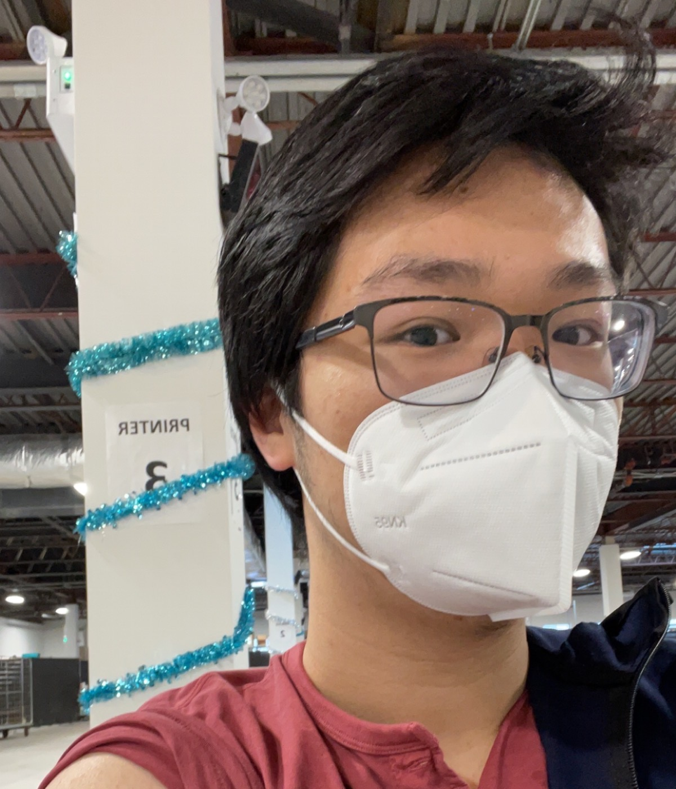

<div class="about-page">
  <div class="page-body">
    <div class="header">
      <h2>Now</h2>
      <p>(Image is from Tubing on the Grand River during Summer 2021)</p>
    </div>
    <div class="now-info">
      <p>
        Inspiried by the
        <a href="https://nownownow.com/about" target="_blank">now</a>
        movement. This page is a written version of what I am currently doing
        and what's happening in my life at a particular point of time. It's what
        I would say to a friend when catching up over some coffee (which I
        absolutely love).
      </p>
    </div>
    <div class="info" data-aos="fade-up">
      <div class="content-wrap row">
        <div class="col-md-3 img">
          
        </div>
        <div class="col-md-9">
          <div class="bio-text">
            <p>Mostly right now, I am either teaching, learning or coding.</p>
            <br />
            <p>More specifically:</p>
            <ul>
              <li>Enjoying my winter break after a hectic Fall 2021 semster</li>
              <li>Catching up on my reading list</li>
              <ul>
                <li>
                  <u>Currently reading</u>: <i>The Night She Disappeared</i> by
                  Lisa Jewell
                </li>
                <li><i>A Slow Fire Burning</i> by Paula Hawkins</li>
                <li><i>Reminders of Him</i> by Colleen Hoover</li>
              </ul>
              <li>Teaching on Campus (In-person and Virtually)</li>
              <ul>
                <li>
                  Wrapping up TAing
                  <a
                    href="https://utsc.calendar.utoronto.ca/course/csca67h3"
                    target="_blank"
                    >CSC/MATA67: Discrete Mathematics</a
                  >
                </li>
                <li>
                  Wrapping up TAing
                  <a href="/mata32-f21" target="_blank"
                    >MATA32: Calculus for Management I</a
                  >
                </li>
                <li>
                  Preparing to TA
                  <a href="mata37" target="_blank"
                    >MATA37: Calculus II for Mathematical Sciences</a
                  >
                </li>
              </ul>
            </ul>
            <p>Picture is from Water Tubing in Cambridge, ON from Aug 2021</p>
          </div>
        </div>
      </div>
    </div>
    <div class="info" data-aos="fade-up">
      <div class="content-wrap row">
        <div class="col-md-9">
          <div class="bio-text">
            <ul>
              <li>Getting ready for my Winter 2022 courses</li>
              <ul>
                <li>
                  <i>CSCC63: Computability and Computational Complexity</i>
                </li>
                <li><i>CSCD01: Engineering Large Software Systems</i></li>
                <li>
                  <i>CSCD03: Social Impact of Information Technology</i>
                </li>
                <li><i>MATC44: Introduction to Combinatorics</i></li>
              </ul>
              <li>Coding various side projects</li>
              <ul>
                <li>
                  Using Angular to enhance my personal webpage (this site!)
                </li>
                <li>Learning ReactJS framework</li>
              </ul>
            </ul>
            <br />
            <p>Photo is of me getting my COVID booster in Dec 2021</p>
          </div>
        </div>
        <div class="col-md-3 img">
          
        </div>
      </div>
    </div>

    <div class="now-info date" data-aos="fade-up">
      <p>This version is accurate as of New Year's 2022</p>
    </div>

    <div class="icons">
      <a href="mailto:jtony.cao@mail.utoronto.ca">
        <fa-icon class="footer-icon" [icon]="faEnvelope"></fa-icon>
      </a>
      <a href="https://www.linkedin.com/in/tony-cao19/" target="_blank">
        <fa-icon class="footer-icon" [icon]="faLinkedinIn"></fa-icon>
      </a>
      <a href="https://github.com/t-cao19" target="_blank">
        <fa-icon class="footer-icon" [icon]="faGitHub"></fa-icon>
      </a>
    </div>
  </div>
</div>
